Define concrete transitional semantics
Steps
- Define the set of states : $\mathbb{S}$.
- Define the transition relation : $\hookrightarrow \ (\subseteq \mathbb{S} \times \mathbb{S})$.
- Define $\textit{Step}$ : natural powerset-lifted version of $\hookrightarrow$
- Define a concrete semantics.
[1/4] Define the set of states: $\mathbb{S}$
A state $s \in \mathbb{S}$ is a pair $(l, m)$.
- $l \in \mathbb{L}$ : program label which denotes the next operator.
- $m \in \mathbb{M}$ : machine state at $l$ (before exec $l$).
- That would consist of:
- memory :
Map<Addr, Value> - environment :
Map<Variable, Addr> - continuation of the program
- memory :
- That would consist of:
[2/4] Define the transition relation $\hookrightarrow$
If the next state of $s = (l, m)$ is $s' = (l', m')$ : $$ \begin{align} s &\hookrightarrow s'\\ (l, m) &\hookrightarrow (l', m') \end{align} $$
- The next label $l'$ called control flow
- Control flow may not be determined solely by the syntax.
- ex.
goto, func-ptr, ...- In those cases, $l'$ is an evaluation result from the current state $(l, m)$.
Example 4.1 (Concrete transition sequence)
Consider the program:
# 0: (label) input(x) # 1 while (x <= 99) # 2 x += 1 # 3
Assumptions:
- Initial state : empty memory $\emptyset$
- Inputs are only 0, 99 and 100
Transition sequence for the inputs are : $$ \begin{align} &(0, \emptyset)\hookrightarrow (1, x \mapsto 100)\hookrightarrow (3, x \mapsto 100)\\ &(0, \emptyset)\hookrightarrow (1, x \mapsto 99)\hookrightarrow (\textcolor{green}{\textbf{Q. Fill the rest.}})\\ &(0, \emptyset)\hookrightarrow (1, x \mapsto 0)\hookrightarrow (2, x \mapsto 0)\hookrightarrow (1, x \mapsto 1)\hookrightarrow \nonumber\\ &\qquad\qquad\quad\cdots\hookrightarrow (1, x \mapsto 100)\hookrightarrow (3, x \mapsto 100) \end{align} $$
Answer
$$(0, \emptyset)\hookrightarrow (1, x \mapsto 99)\hookrightarrow (2, x \mapsto 99)\hookrightarrow (1, x \mapsto 100)\hookrightarrow (3, x \mapsto 100)$$
[3/4] Define $\textit{Step}$
$\textit{Step}$ is a natural powerset-lifted version of $\hookrightarrow$ $$ \begin{align} \textit{Step} \ &:\ {\Large\wp}(\mathbb{S}) \rightarrow {\Large\wp}(\mathbb{S}) \\ \textit{Step}(X) &= \{ s' | s \hookrightarrow s', s \in X \} \end{align} $$
[4/4] Define a concrete semantics.
- We restrict our analysis interest to computing the set of reachable states.
- So, we define the concrete semantics as the set of all the reachable states of the program.
Example 4.2 (Reachable states)
Consider the program:
# 0: (label) input(x) # 1 while (x <= 99) # 2 x += 1 # 3Assumptions:
- Initial state : empty memory $\emptyset$
- Inputs are only 0, 99 and 100
Concrete semantics of the program is: $$ \begin{align} & \{(0, \emptyset), (1, x \mapsto 100), (3, x \mapsto 100)\}\\ \cup \ & \{(0, \emptyset), (1, x \mapsto 99), (2, x \mapsto 99), (1, x \mapsto 100), (3, x \mapsto 100)\}\\ \cup \ & \{(0, \emptyset), (1, x \mapsto 0), (2, x \mapsto 0), (1, x \mapsto 1), \cdots, (1, x \mapsto 100), (3, x \mapsto 100)\} \end{align} $$
Accumulate all reachable states
Reachable states of a program is: $$ \begin{align} \bigcup_{i=0}^\infty \textit{Step}^i(I) \quad (I \text{ is initial states}) \label{eq:reachable} \end{align} $$
We define the function $F$ : $$ \begin{align} &F: {\Large\wp}(\mathbb{S}) \rightarrow {\Large\wp}(\mathbb{S})\\ &F(X) = I \cup \textit{Step}(X) \end{align} $$
It means, $$ \begin{align} F^i(\emptyset) = \begin{cases} \emptyset & (i = 0)\\ \bigcup_{k=0}^{i-1} \textit{Step}^k(I) & (i > 0) \end{cases} \end{align} $$
$F$ has a least fix point : $$ \begin{align} \textbf{lfp} F = \bigcup_{i=0}^\infty F^i(\emptyset) \end{align} $$
Because
- ${\Large\wp}(\mathbb{S})$ is CPO with infimum $\emptyset$.
- $F$ is continuous
- → Theorem A.1
The $\textbf{lfp} F$ is equal to the reachable states $\eqref{eq:reachable}$ : $$ \begin{align} \textbf{lfp} F = \bigcup_{i=0}^\infty F^i(\emptyset) = \bigcup_{i=0}^\infty \textit{Step}^i(I) \end{align} $$
Continuous
A function $f : A \rightarrow B$ is continuous when :
For all chain $\{ a_i \}$ on $A$, $$ \begin{align} \sqcup\{ f(a_i) \} = f(\sqcup \{a_i\}) \end{align} $$
- chain means : $a_0 \preceq a_1 \preceq a_2 \preceq \cdots$
- $\sqcup$ means least upper bound in this context.
(if $f$ is continuous, then $f$ is monotone.)
Theorem A.1 (Kleene's fixpoint theorem)
If $f : E \rightarrow E$ is continuous and E is a CPO with infimum $\bot$, $f$ has a least fixpoint : $$ \begin{align} \textbf{lfp} f = \bigcup_{n = 0}^\infty f^n(\bot) \end{align} $$
Proof
As $\bot$ is the infimum of $E$ : $$ \begin{align} \bot \preceq f(\bot) \end{align} $$[Step1 : $\bigcup_{n = 0}^\infty f^n(\bot)$ is a fixpoint ]
Since $f$ is continuous, it is also monotone. Thus, $$ \begin{align} f^n(\bot) \preceq f^{n+1}(\bot) \end{align} $$
Therefore, a sequence $\{f^n(\bot)\ | n \in \mathbb{N}\}$ forms a chain.
As $E$ is a CPO, it has a least upper bound. $$ \begin{align} X \ :=\ \sqcup \{f^n(\bot)\ | n \in \mathbb{N}\} \ \left(= \bigcup_{n = 0}^\infty f^n(\bot)\right) \end{align} $$
Since $f$ is continuous and $\{f^n(\bot)\ | n \in \mathbb{N}\}$ forms a chain, $$ \begin{align} \underset{X}{\underline{\sqcup \{ f(f^n(\bot)) | n\in\mathbb{N}\}}} = \underset{f(X)}{\underline{f(\sqcup \{f^n(\bot)\ | n \in \mathbb{N}\})}} \end{align} $$
So, $X$ is a fixpoint of $f$
[Step2 : $\bigcup_{n = 0}^\infty f^n(\bot)$ is a least fixpoint ]
Assume $X'$ is a fixpoint of $f$.
Since $\bot$ is a infimum, $$ \begin{align} \bot \preceq X' \end{align} $$
Since $f$ monotone, $$ \begin{align} f^n(\bot) \preceq f^n(X') \ (= X') \end{align} $$
So, $$ \begin{align} \bigcup_{n = 0}^\infty f^n(\bot) \preceq X' \end{align} $$
This indicates $X$ is a least fixpoint.
Note
I think we must assume $\mathbb{S}$ is finite set (${\Large\wp}(\mathbb{S})$ is finite height).
Because, if ${\Large\wp}(\mathbb{S})$ is infinite height, then we can't find $\textbf{lfp} f$.For example, consider $f$ : $$ \begin{align} &f : (\mathbb{N}, \leq) \rightarrow (\mathbb{N}, \leq)\\ &f(x) = x + 1 \end{align} $$
Since $\mathbb{N}$ is CPO and $f$ is continuous, from Theorem A.1, there is a $\textbf{lfp} f$.
However, there is no $x$ which satisfies $x = f(x)$.
(定理的には $\textbf{lfp}f= \bigcup_{i=0}^\infty f(0) = \infty$ になりそうだけれど...?? infinite heightなときはWideningするので問題にならない？)[追記] CPOは、任意の($\omega-$chain = 無限長chainを含む)chainがleast upper boundを持つことが条件なので、$\mathbb{N}$はCPOにはならない。 この本が詳しいらしい。
Summary
Def. 4.1 (Concrete semantics, the set of reachable states) Given a program and
- $\mathbb{S}$ : the set of states
- $\hookrightarrow$ : a one-step transition relation between two states
- $I$ : the set of initial states
- $\textit{Step}$ : a natural powerset-lifted version of $\hookrightarrow$
- $F(X) = I \cup \textit{Step}(X)$
Then, the concrete semantics of the program, the set of all reachable states from $I$ is : $$ \begin{align} \textbf{lfp} F \end{align} $$
Def 4.2 (Semantic domain and semantic function)
We call:
- $F$ : concrete semantic function
- $({\Large\wp}(\mathbb{S}), \subseteq)$ : concrete semantic domain or concrete domain